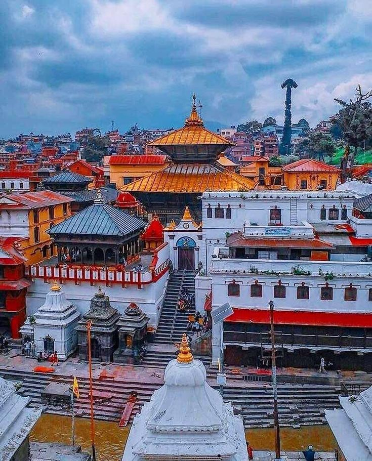

POPULAR NOW

Kathmandu
Pokhara

Nepal country of Asia, lying along the southern slopes
of the Himalayan mountain ranges.
Swayambhunath Stupa, Pashupatinath Temple, Monkey Temple, Boudha Stupa, Basantapur Durbar Square, Bhaktapur Durbar Square, Patan Durbar Square, Garden of Dreams, Hanuman Dhoka Durbar, Narayanhiti Palace Museum and many more
The Pokhara is best known for the stunning view of the Annapurna range. It is perhaps one of the few places on earth from where mountains above 6,000 m can be seen unobstructed from an altitude of 800 m within the distance of 28 km
Nestled at the foot of the Himalayas, Chitwan has a particularly rich flora and fauna and is home to one of the last populations of single-horned Asiatic rhinoceros and is also one of the last refuges of the Bengal Tiger. Chitwan National Park (CNP), established in 1973, was Nepal's first National Park
We Are Here to Make Your Dreams true
Connectwith us